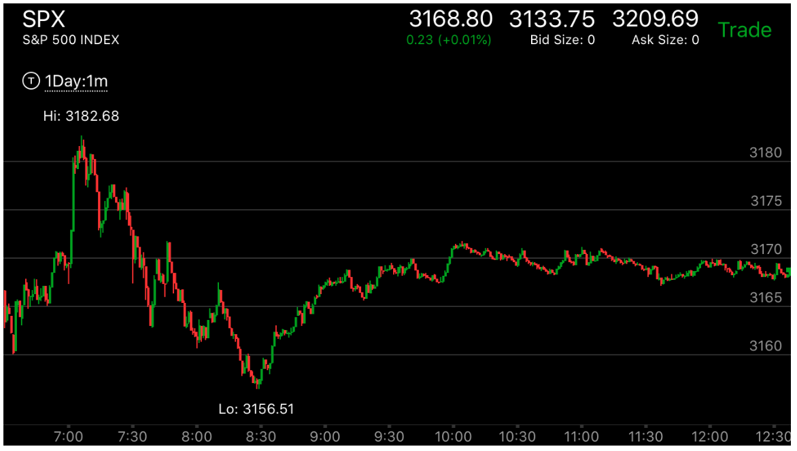
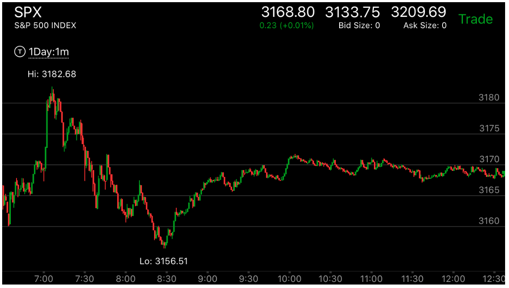

反向走势引发趋势
- 大盘并没有反转，但是它因为涨的太多或者跌的太多，需要一个很大的回调，
这时它会先回调，然后走出一个两段走势，但是不是新高，新低。然后引发一轮回调。这个回调结束后，继续原来的走势。
- 这种走势常常发生在反常两段走势当中，一个很大的第一浪，然后是一个很小的第二浪。为了
填补第一浪的真空。会引发一个比较大的回调。


图示：
图一：开盘大涨，第一浪很大，然后再次上涨，缓慢走出新高。
在高点徘徊很久后，开始下跌。它在12：10，走出一个5浪上涨走势，没有新高，但是接近新高。这个就是一个
明确的走势，表示会继续下跌。
图二：SUN8.是前面的走势结束。盘后一直走平。第二天，Mon9，开盘冲高，接近前面高点，再次走平，然后大跌。
不断的走低，形成很大的回调。但是要记住，它不是反转。
 

图示：
图一：大涨，出现第一浪很强，第二浪很弱的走势。
图二：7：00它缓慢冲高后，加速冲高，这个就形成了一个反转走势。没有创新高。但是接近新高。然后一路大跌，填补了真空。